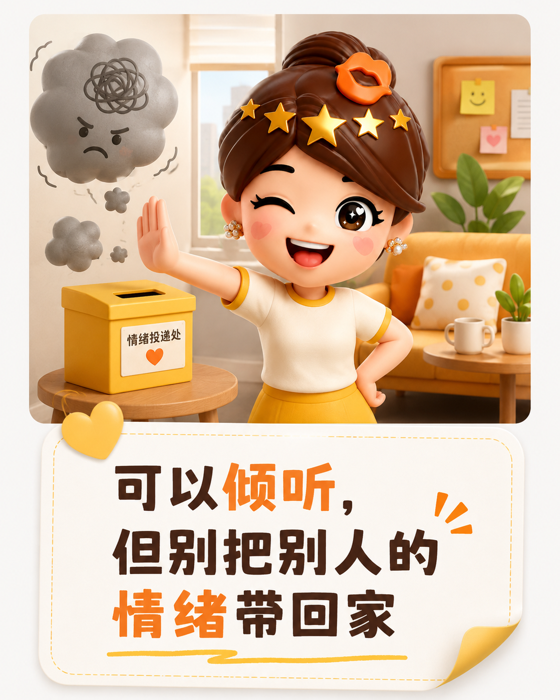
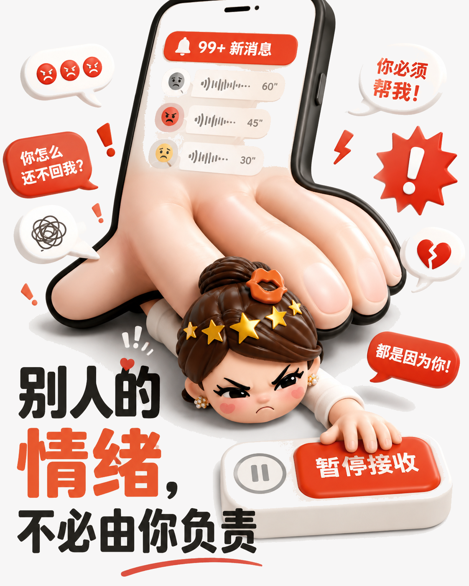
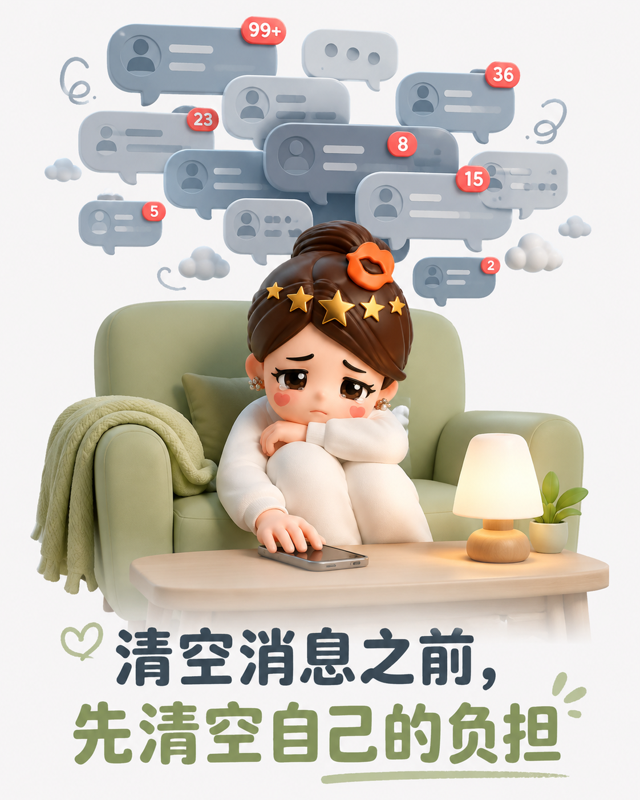

别再替别人保管情绪：善良也要有边界
会倾听是一种温柔，但不必把每个人的烦恼都背回自己的生活。
你接住的，可能正在消耗你
同事把家庭矛盾倒给你，朋友把失恋和深夜语音交给你，亲戚把未经核实的消息塞进群聊。每个人说完都轻松一点，只有你带着沉重继续工作、回家，甚至开始替他们生气。

共情不是无限接听
理解别人，不等于随时待命；愿意帮忙，也不等于负责解决。把消息设为免打扰，给聊天划出时间边界，都是在保护自己的注意力。

把专业的事交给专业的人
当对方反复陷在痛苦里，最有效的支持可能不是陪伴到凌晨，而是建议心理咨询、医生或可靠的求助渠道。你可以给方向，却不必成为全天候的情绪急救站。

真正长久的关系，容得下拒绝，也尊重彼此的容量。先把自己的心情放回原位，才有余力给予清醒而真诚的关心。